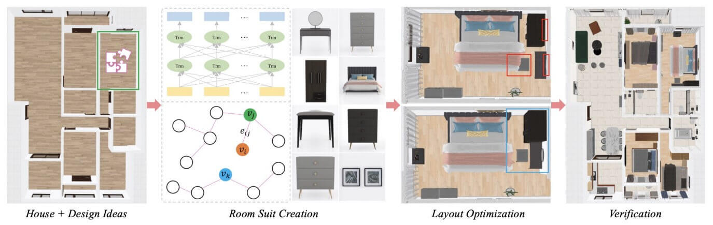
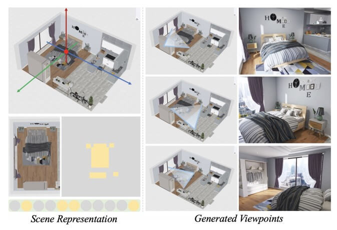
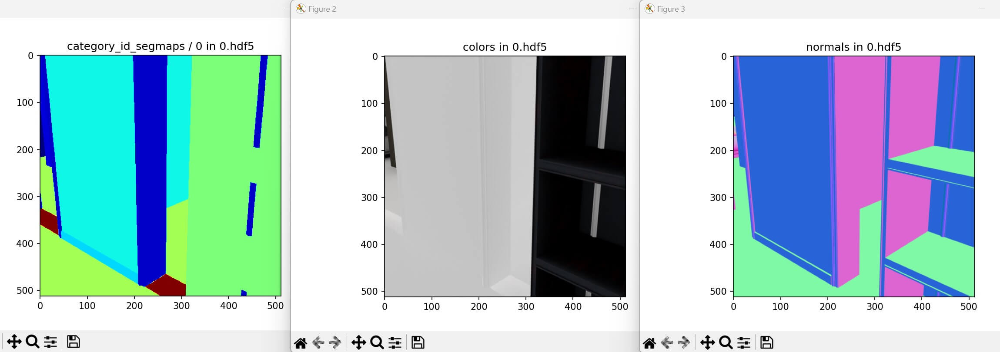

资源
-
Arxiv：[2011.09127] 3D-FRONT: 3D Furnished Rooms with layOuts and semaNTics (arxiv.org)
-
BlenderProc：BlenderProc/examples/datasets/front_3d/README.md at main · DLR-RM/BlenderProc (github.com)
-
PaperWithCode：3D-FRONT Dataset | Papers With Code
-
下载地址：3D-FRONT: 3D Furnished Rooms with layOuts and semaNTics_数据集-阿里云天池 (aliyun.com)
全文
Abstract
3D-FRONT 数据集：
-
带布局和 semaNTics 的 3D 家具房间
-
一个新的、大规模的、全面的合成室内场景库
-
以专业设计的布局为重点
-
大量房间由具有风格兼容性的高质量纹理 3D 模型填充
-
从布局语义到单个对象的纹理细节
发布了 Trescope，一个轻量级的渲染工具，以支持 3D-FRONT 中 2D 图像和注释的基准渲染。
1. Introduction
计算机视觉界在 3D 室内场景的研究上投入了大量精力，从 3D 重建、视觉 SLAM 和导航，到场景理解、可供性分析和生成建模。
现有的 3D 场景数据集分为两大类：acquired（通过扫描和重建）和 designed。acquired 的网格在几何保真度和纹理质量方面往往质量较低。
在本文中，我们介绍了 3D-FRONT（带布局和 semaNTics 的 3D 家具室），这是一个新的、大规模的、综合的合成 3D 室内场景库。它：
- 包含专业且独特设计的布局，涵盖 31 个场景类别、对象语义（例如，类别、样式和材质标签），
- 大量（18968）填充有 3D 家具对象的房间。
- 这些 3D 家具对象都具有高质量的纹理，这要归功 3DFUTURE，这是一个最近发布的工业生产中使用的高质量 3D 家具数据集。
2. Related Work
介绍了 3D 数据集中两大类别：
-
Acquired Scenes
-
Designed Scenes
然后说了这些数据集目前的不足，3D-FROUNT 分享了用于建造房屋的一切，目前功能最齐全。
3. Building 3D-FRONT
从一些房屋集合开始，创建房间套房，优化布局，验证创建的室内设计，并最终指定合格的相机视点。


3.1. Room Suite Creation
房间的设计思想包括对象的类别标签及其位置、方向、大小和样式。以卧室为例，我们首先根据所需的尺寸和风格，从 3D 模型池中随机选择一个种子对象，例如床。然后，我们根据迄今为止的房间套房反复识别视觉匹配的家具，直到房间被填满。
主要依靠 3D-FUTURE 中的家具套房组合（FSC）方法来创建视觉兼容的套房。具体来说，利用大规模的专家场景设计，我们执行了两项任务，即掩码预测和套件兼容性评分，以对视觉兼容性进行建模。
- 第一个任务预测套房中给定其他对象的遮罩（移除）家具。
- 第二个任务评估输入套件的兼容性得分。我们使用纹理图像来表示每个对象（家具）。
3D-FUTURE 首先采用从 VEN 中提取的视觉嵌入来执行初步排名，然后采用经过训练的 GBDT-LR 模型来对所选候选进行重新排名，以进行在线推荐。我们通过考虑图自动编码器技术来改进初级排序阶段。
3.2. Layout Optimization and Verification
布局优化从最初创建的设计开始，稍微修改房间套房中的对象位置，以满足几个布局约束，包括成对距离、焦点距离、到墙的距离、可达性和碰撞。
我们进一步验证了创建的设计，并删除了不满意的设计，以确保数据集的质量。
3.3. Viewpoint Generation
视点生成旨在为每个场景分配多个摄影机，并确保大多数摄影机都具有实用的视点。
4. Validation and Assessment
在本节中，我们提供了几种方法来验证和评估数据集的构建方式以及数据的质量和效用。
- 推荐人系统评估
- 用户研究
- 3D-FRONT 的性质
- 公开共享所有基本数据，这些数据可以实现高质量室内场景的建模，从布局语义到单个对象的风格和纹理细节。
- 3D-FRONT 能够实现与 3D 场景相关的各种人工智能任务，包括数据驱动的设计研究，如平面图合成、室内场景合成和场景套件兼容性预测，而其他场景数据集则无法充分支持这些任务。它也有利于研究 3D 场景理解主题，如 SLAM、3D 场景重建和 3D 场景分割。
5. Applications
5.1. Interior Scene Synthesis
室内场景合成
5.2. Texturing 3D Models in Indoor Scenes
在室内场景中对 3D 模型进行纹理处理。
将最近的纹理网格生成模型 TM-Net 扩展到 3D 场景纹理任务。
在训练生成模型后，我们合成随机形状的纹理，并将其用作其他对象的条件。
6. Conclusion and future work
这个数据集的具体合成细节大概就是这样了。
BlenderProc
把数据集下好，用这个代码开跑：
- 导入相关的库：
blenderproc：一个用于处理和渲染三维模型的库。argparse：用于解析命令行参数。os：用于文件和目录操作。numpy：用于数值计算。
1 | |
-
解析命令行参数：
-
使用
argparse库创建一个参数解析器。 -
添加四个必需的参数：
front，future_folder，front_3D_texture_path和output_dir。 -
解析命令行参数并存储在
args变量中。
-
1 | |
-
检查文件夹是否存在：
-
使用
os.path.exists()函数检查两个文件夹是否存在。 -
如果其中一个文件夹不存在，则抛出异常。
-
1 | |
- 初始化：
- 使用
bproc.init()进行初始化。
- 使用
1 | |
-
加载前景 3D 对象：
-
使用
bproc.loader.load_front3d()函数加载 FRONT-3D 对象。 -
传入前景文件路径(
json_path)，未来模型文件夹路径（future_model_path），前景纹理文件夹路径（front_3D_texture_path）和标签映射（label_mapping）。 -
将加载的对象存储在
loaded_objects变量中。
-
1 | |
-
初始化采样器和BVH树：
-
使用
bproc.sampler.Front3DPointInRoomSampler()初始化采样器，用于在加载的房间内采样点。 -
使用
bproc.object.create_bvh_tree_multi_objects()函数创建包含所有网格对象的 BVH 树。
-
1 | |
-
循环生成场景：
-
设置最大尝试次数（
tries）和生成的姿势数量（poses）的初始值。 -
通过循环生成不同的摄像机姿势。
-
随机采样摄像机高度和旋转角度，并使用这些参数构建世界坐标系到相机坐标系的变换矩阵（
cam2world_matrix）。 -
检查生成的视图是否满足条件：场景覆盖分数高于 0.8，障碍物与相机至少 1 米远，障碍物的平均距离在 2.5 到 3.5 米之间，没有背景可见，并且视图足够有趣。
-
如果满足条件，则将该摄像机姿势添加到渲染管道中，并增加生成的姿势数量（
poses）。 -
更新尝试次数（
tries）
-
1 | |
-
配置渲染器：
-
使用
bproc.renderer.enable_normals_output()启用法线渲染输出。 -
使用
bproc.renderer.enable_segmentation_output()启用分割图像输出，并根据类别 ID 进行映射。
-
1 | |
-
渲染整个流程：
-
使用
bproc.renderer.render()函数渲染整个管道，包括场景和各种输出。 -
将渲染结果存储在
data变量中
-
1 | |
- 将数据写入.hdf5文件：
- 使用
bproc.writer.write_hdf5()函数将渲染的数据写入一个.hdf5文件。 - 指定输出路径为
args.output_dir。
- 使用
1 | |

好像没什么卵用……